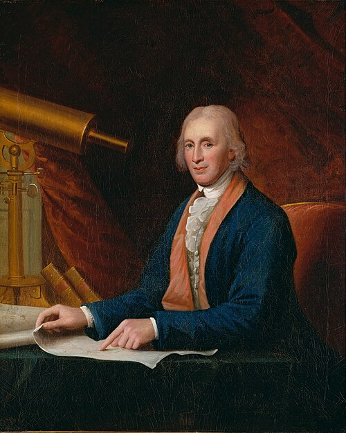
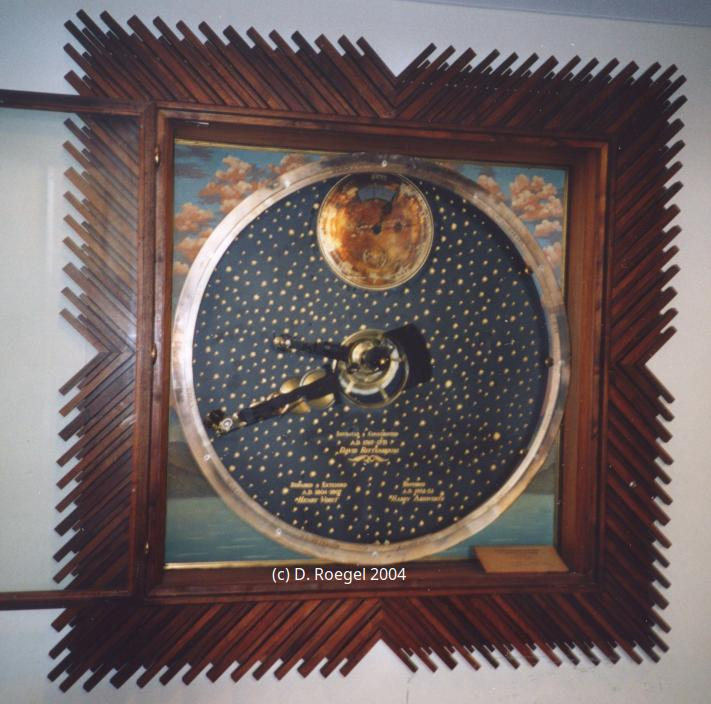
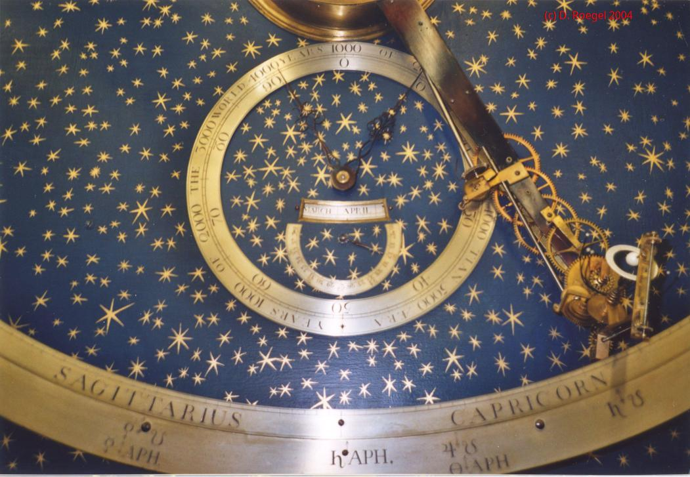
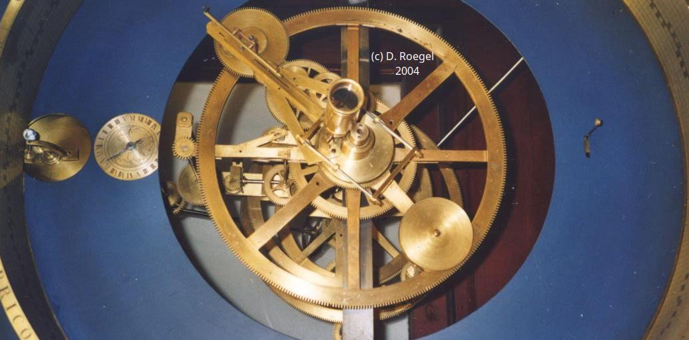
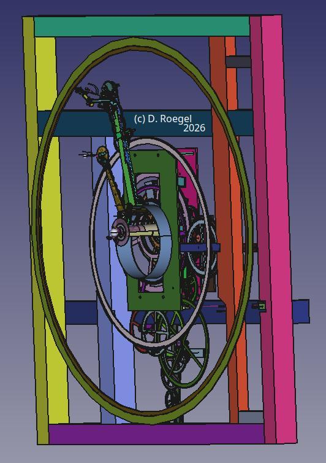
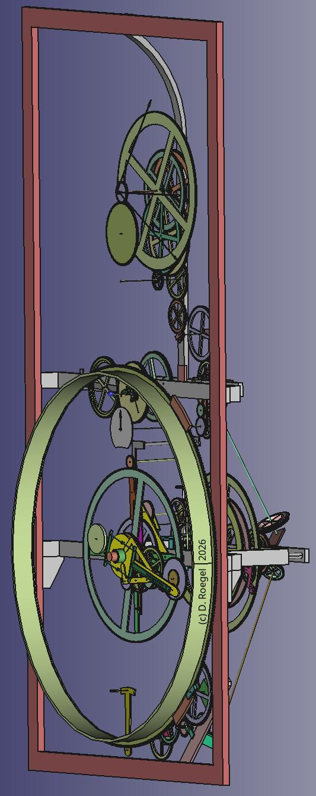
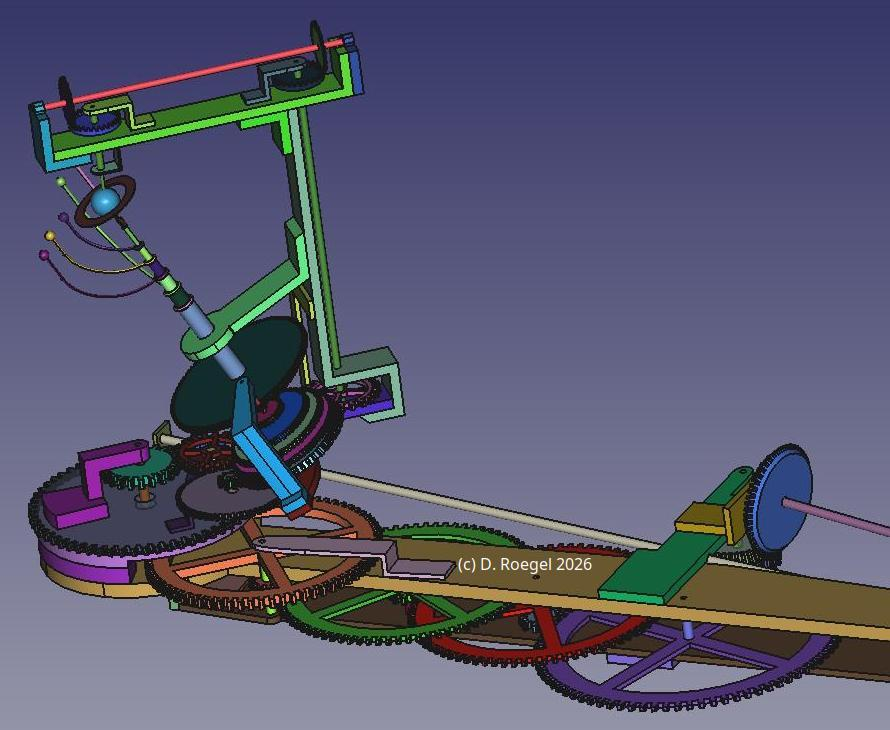
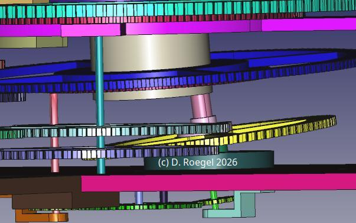

Introduction
David Rittenhouse (1732–1796) is one of the great scientists of colonial America, second only to Benjamin Franklin, and yet he remains little known by the general public. In Philadelphia, his name is mostly associated with Rittenhouse square, so named since 1825.
Rittenhouse was born in Germantown, now part of Philadelphia, to a family of German immigrants. He became a well known instrument maker, astronomer and inventor. In 1769, he observed the transit of Venus in front of the Sun, using his own instruments. In the 1790s, he published a number of scientific papers. He was the second president of the American Philosophical Society, which was founded by Franklin and others in 1743. From 1792 to 1795, he was the first director of the United States Mint. Rittenhouse was highly esteemed by Thomas Jefferson who wrote
We have supposed Mr. Rittenhouse second to no astronomer living: that in genius he must be the first, because he is self-taught. As an artist he has exhibited as great a proof of mechanical genius as the world has ever produced. He has not indeed made a world; but he has by imitation approached nearer its Maker than any man who has lived from the creation to this day. (Notes on Virginia, 1781)

The orreries
Among his many achievements, Rittenhouse constructed a number of clocks,
as well as two complex ``orreries.'' An orrery or planetarium is a mechanical representation
of the solar system, so named because one of the first such
planetarium was made for Charles Boyle, the 4th Earl of Orrery around 1713.
The first of Rittenhouse's orreries
was constructed between 1767 and 1771 and sold to the University of Princeton,
then the College of New Jersey.

A second, more complete orrery, was made in 1770-1771 for the College of Philadelphia, now part of the University of Philadelphia, as a compensation for the Princeton orrery which Philadelphia had expected to obtain. These two orreries are located in a vertical plane, whereas most orreries have the orbits of the planets horizontally laid out.


Although the two orreries are similar, the Philadelphia one has an additional panel for the motion of the Moon, and possibly had a third panel for the motions of the moons of Jupiter and Saturn. In that sense, Rittenhouse actually constructed more than an orrery, as the lunar panel is an entirely separate part. For matters of convenience, I will still call Rittenhouse's constructions ``orreries,'' even when they go beyond a mere planetarium. The Princeton orrery may also have had additional panels, but, if so, they have been lost.
Rittenhouse's orreries are very intricate and the two orreries
had different fates. The Philadelphia orrery is almost in its original
state, whereas the Princeton orrery was repaired in the 1950s and
unfortunately fitted with electric motors. None of these orreries
has ever been described in detail to this day, although both have
been restored. Rittenhouse himself only published a short
description of his project for the orrery in the first volume
of the Transactions of the American Philosophical Society,
and neither William Barton's memoir (1813),
nor the biographies of Edward Ford (1946) and
Brooke Hindle (1964) go into much technical details on the orreries.
Donald L. Fennimore and Frank L. Hohmann's recent (2023) monograph covers Rittenhouse's clocks in detail for the first time,
but only devotes a few pages to the orreries.
Even Howard C. Rice Jr.'s volume published at the time of the restoration of the Princeton orrery (1954) gives only very general
historical information on them.
As I said, Rittenhouse's orreries are very complex machines,
but their complexity does not rest in the number of informations displayed
nor in the number of parts.
Some clocks have dozens of ``complications,'' tens of dials, etc.,
and yet they are not especially complex in my view. Almost every
watch is for instance relatively simple to understand,
and even to draw, including those
with repeater functions or tourbillons, to a great extent because
the axes are all parallel. We rarely have
a function which is difficult to understand, or even to construct.
A dial showing sidereal time, or the times of sunrise and sunset
are for instance usually elementary features.
Sometimes, the feat is to fit many functions in a cramped space,
but the functions themselves may be easy to understand and even to construct.
Sometimes also, the difficulty is to explain how a mechanism works,
and many mechanisms are lacking proper explanations. This does not
mean that they are intrisically difficult to understand.
Instead, I believe that one should distinguish different types of
complexities. Better measures of complexity, beyond the number of parts
or functions, are the difficulty of understanding a mechanism,
and the difficulty of reconstructing it,
whether with machines or in 3D. And in my experience, one rarely
has at the same time a mechanism which is difficult to understand
and difficult to reconstruct.
A mechanism may have been difficult to construct (and perhaps to reconstruct),
but may still be (relatively) easy to understand.
Of course, one should also consider how difficult it was in the first place
to conceive a mechanism for a certain task, both with respect to its
functions and with respect to its layout. Consider for instance
Schwilgué's Easter computer, which is very ingenious,
and still (relatively) easy to understand.
Although a mechanism may have been difficult to design,
modeling it is usually easier, but making a good model gives an insight
into the initial construction and thought process, and may also be difficult
if that goal is sought. Understanding a mechanism may also be difficult
if one is trying to analyse its properties mathematically.
Finally, there is also the complexity of setting a mechanism.
So, the matter of complexity is, well, not so simple.
To this, one should add that some mechanisms have been designed
with great thought ahead of construction, and others have been
almost improvised, albeit with genius. The latter adds
to the complexity of (re)construction.
These are exactly the features found in Rittenhouse's orreries.
They are difficult to understand, in particular the lunar panel,
which is itself a one of a kind masterpiece.
Rittenhouse's orreries are difficult to (re)construct,
whether mechanically or in 3D,
because they have to some extent been improvised.
Although the planet panels are (relatively) easy to understand,
their complexity lies first in Rittenhouse's choices
to try to display accurate motions of the planets, with tilted
eccentric orbits, with wheels having unevenly spaced teeth, etc.,
and second in the fact that the design
is not as rational as with many other orreries. When analyzing
these orreries, one can sense that Rittenhouse had met difficulties
and that he had to find solutions along the way, solutions he did
not have at the start of his journey. And setting these orreries
is not a simple task.
This makes Rittenhouse's orreries intrinsically more complex, and also more
complex to model, than famous astronomical clocks such as those
of Strasbourg (with which I am very familiar),
Besançon, Beauvais, etc., and also more recent ones,
which are for the most part engineering works, well designed
and not improvised. I believe that Rittenhouse's orreries
are also more complex to model than most other orreries,
because most of them do not have so many special features
such as tilted wheels, uneven toothing, etc.
Some of Hahn or Neßtfell's orreries have tilted wheels,
but not uneven toothing. Hahn and Neßtfell also used
epicyclic gears, but modeling them is not particularly complex.
Perhaps Baldewein
or Imsser's clocks
also have such features, but they do not have that many parts.
Perhaps Joseph Pope's orrery in Harvard also has tilted wheels, I am not sure.
In any case, when the only ``complex'' feature of
an astronomical clock is its number of parts, for instance
for the Beauvais astronomical clock,
this number of parts does not really complicate the study
or the design of the clock, it merely lengthens it.
For all these reasons, I view Rittenhouse's orreries
as the most complex astronomical mechanisms of Colonial America,
and perhaps even the most complex ones
prior to the 20th century. We must therefore be thankful
that the two orreries, especially the Philadelphia one,
have been preserved.
Now, the Philadelphia orrery
kept in the Van Pelt-Dietrich Library Center has for the first time been entirely
analyzed and modeled in 3D, with the exception of small features such as
screws and other details. The result is beyond any imagination,
and is probably the most complex such 3D model of an astronomical mechanism
ever made. Or rather the most complex such models,
as two separate models were made,
one for the planet panel and another one for the lunar panel.
These models are faithful
to the Philadelphia orrery, especially regarding the structure,
the number of teeth of the wheels, and the kinematics.
Moreover, they are unique in that they were produced
using a sustainable algebraic-geometric approach,
unlike most 3D models of clocks.
These two models are the result of a long process than spanned more
than 20 years. I first heard of Rittenhouse's orreries at the end of 2002,
and started to work earnestly on them in the first months of 2003.
I then visited Princeton and Philadelphia in 2004 and saw Rittenhouse's
orreries first hand. It is also at that time
that I made a first crude 3D model of the planet panel,
the central part of the Philadelphia orrery. But it was only
in 2019 that I worked seriously on the lunar panel, the panel
at the right of the planet panel, and made a good 3D model of it.
Incidentally, this model helped me develop techniques
which I used for the 3D model I made in 2020 of
the Paris Notre-Dame clock. (This model is available for use in any CAD
program here.)
And finally in 2025-2026, I worked again on the planet panel
of Rittenhouse's orrery
and put it on par with the lunar panel. This completes a project started
23 years earlier.
I am not aware of similar models made for other complex
orreries. Pope's orrery in Harvard, Adams' Grand orreries,
Hahn's orreries,
and similar ones,
have not yet been modeled.
In my opinion, the only 3D models that may be considered for comparison
with the models I made
are those for the Türler
clock (originally in Zürich and now in La Chaux-de-Fonds) made in the 1990s,
and the partial 3D model made
for the Strasbourg astronomical clock in 2017. Both clocks actually
have a very modern design, and are based on plans, with almost no complex
features such as tilted planes (except one for the Strasbourg clock),
uneven teeth, and so on.
The 3D model of the former was based on the plans, and possibly
does not cover all the details. In the case of the Strasbourg clock,
the model is a partial one made for a movie, with only some parts of the clock
having been modeled, and in some cases the model is far from
being faithful, although most people do not notice. It is also clear that
those who made the models were facing simpler tasks and could use
the dimensions of the actual objects, which is something I could not do
in the case of Rittenhouse orreries. Hence the algebraic approach.
However, even when one has the dimensions, it is better to use an algebraic
approach, it is more flexible, more abstract and more sustainable
than a mere ``flat'' approach. But it is also a lot more difficult
and time consuming.
    My aim is now to develop the 3D models I made (planet panel and lunar panel),
and to use them to describe in detail how the Philadelphia orrery
is constructed and how it works. I also hope to make the 3D models
available some day. This may take some time, though,
as I am working on many other projects and because Rittenhouse's
orreries are particularly complex.
As far as the Princeton orrery is concerned, it was very similar
to the planet panel of the Philadelphia orrery but has been altered,
and it seems possible, using the restored Princeton orrery as well
as the set of replaced gears (which have been kept), to draw a more
accurate record of the differences between the two orreries.
But of course, I hope that my work will also be an incentive
for others to make 3D models of the great orreries and
astronomical clocks mentioned above.
There are however several caveats.
One first has to understand what is the real usefulness
of a 3D model. Very often, as I wrote elsewhere
(``Delvart’s astronomical clock (1849) --- An analysis of its orrery,''
Horological Science Newsletter (NAWCC Chapter 161),
2024, issue 2, p. 2-42),
a 3D model is not absolutely necessary to understand how a clock,
or even many orreries, work. The number of mechanism which can greatly benefit
from a 3D model is small, but Rittenhouse's orreries, because they are
so complex, and also because they are not easily accessible,
belong to them.
Even if a 3D model is not absolutely necessary for the
understanding of the actual object,
it can still be viewed as a piece of art,
and can be enjoyed independently from its technical purpose.
I believe that if an orrery is to be modeled in 3D,
one should first set up a committee which will decide about a design
protocol, somewhat like a restoration protocol.
It would be a mistake to throw oneself head first into some software
like SolidWorks, Inventor, Rhino, etc., because what matters is not only
the 3D model, but also the steps that led to it, its reusability,
and its abstractness. Measuring parts of a disassembled mechanism
and entering the dimensions in a CAD program is easy, but this will not
give a very high-level 3D model. And such a 3D model will not be
sustainable, because it will be rigid.
In fact, most 3D models of clocks I have seen contain errors,
and how can these errors be corrected if the model is not a high-level one?
A high-level 3D model should embody abstractness,
try to view a mechanism as a flexible assembly of geometries,
it should provide high-level information about the motions, etc.
This means that at the core of a design there should be parameters,
that positions and motions should be computed and mastered by humans,
not merely left to the decisions of a software, especially regarding
animations. It does also mean
that not only should the CAD model be open and available in exchange
formats, its construction should also be replicable. And one should know
exactly how a model was built, why, when, and by whom. Somehow a model
should be supplemented by a documentation, the model's ``making-of,''
which goes way beyond the mere CAD files. This is a great challenge
for those who will want to model the great orreries of the past.
Last update: D. Roegel, September 16, 2026
Return to the main page.
On the complexity of the orreries
The 3D models
My projects...
... and incentives for others